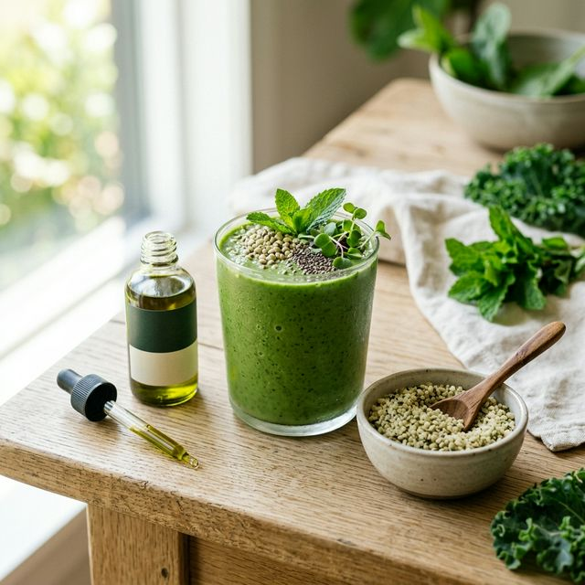

Usos, Alimentação e o Hemp como Superalimento
A Cannabis vai além do "remédio". Ela é uma ferramenta de nutrição avançada e um aliado no seu estilo de vida diário.

Nesse passo final, exploramos como integrar a Cannabis medicinal em sua rotina, seja através do tratamento direto ou da nutrição funcional com o Cânhamo (Hemp).
Vias de Administração
A forma como você consome a Cannabis altera a velocidade e a duração do efeito:
- Óleos/Tinturas (Sublingual): Efeito gradual (30-60 min) e duradouro. Ideal para controle de sintomas crônicos ao longo do dia.
- Vaporização de Flores (Inalação): Efeito quase imediato (1-5 min). Usado para "crises" de dor ou ansiedade, sem a combustão nociva dos cigarros.
- Cremes e Bálsamos (Tópico): Não entra na corrente sanguínea. Excelente para dores musculares localizadas e inflamações de pele.
Hemp: O Superalimento Esquecido
As sementes de Hemp (que não causam efeitos psicoativos) são consideradas um dos alimentos mais nutritivos do planeta. Elas contêm:
- Proteína Completa: Todos os aminoácidos essenciais em uma única fonte vegetal.
- Equilíbrio Ômega: A proporção perfeita de Ômega-3 e Ômega-6 para a saúde cardiovascular.
- Alta Digestibilidade: Diferente de outras proteínas vegetais, o Hemp é facilmente absorvido pelo corpo.
Cannabis como Estilo de Vida
O sucesso do tratamento não depende apenas da planta, mas de um estilo de vida que apoie seu Sistema Endocanabinoide. Isso inclui sono de qualidade, exercícios físicos e uma dieta anti-inflamatória.
Sua Jornada Começa Agora
Agora que você percorreu todos os passos, está pronto para tomar as rédeas da sua saúde. Nosso time de acolhimento está pronto para te guiar na prática.
Iniciar Acolhimento Humanizado